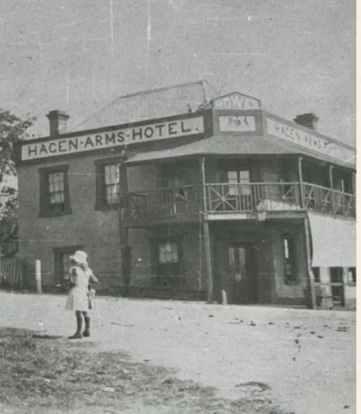
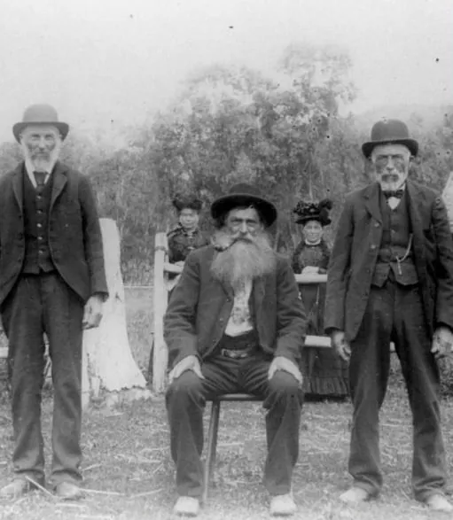
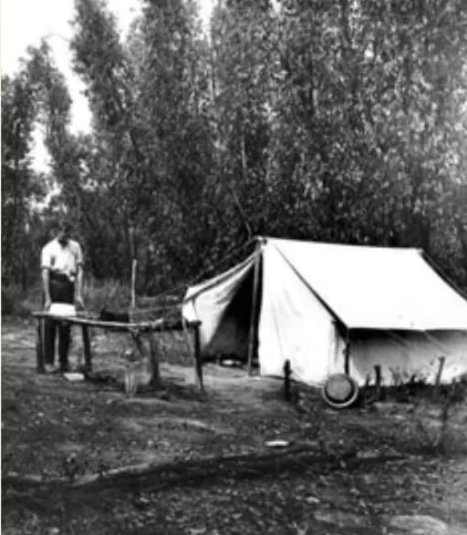
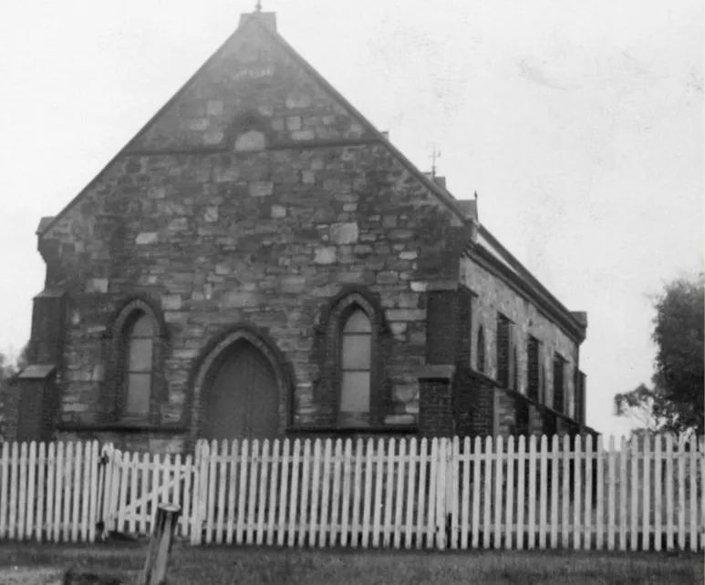
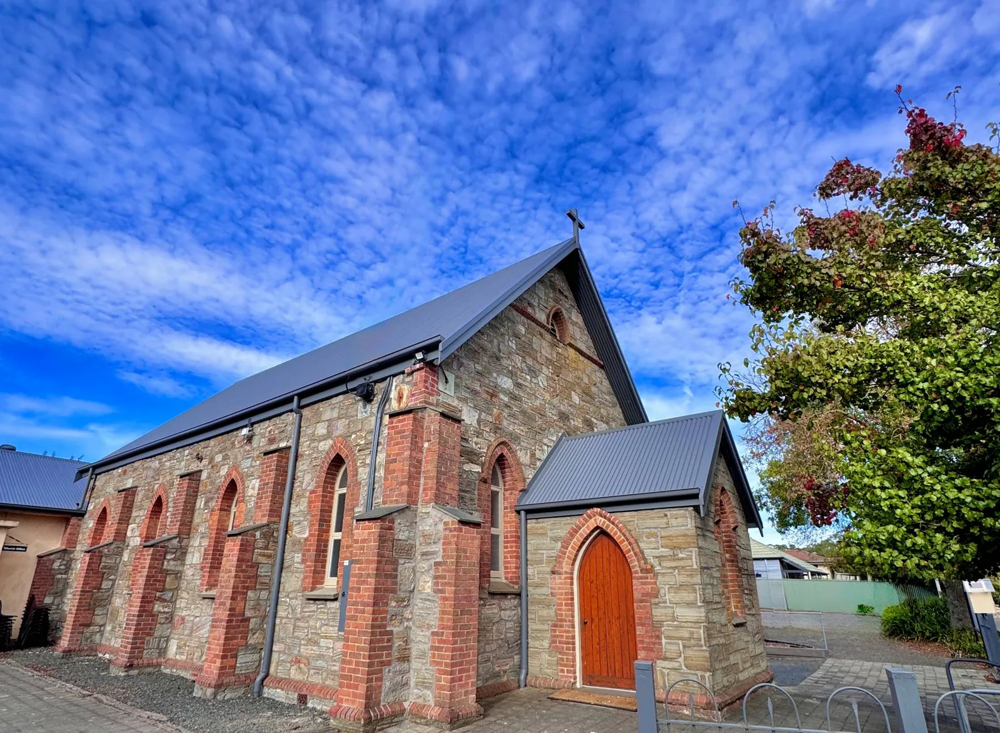
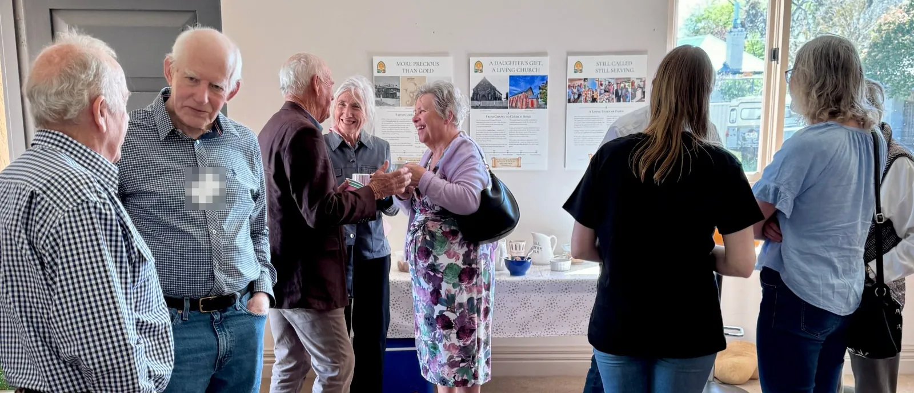

Our story so far
Our History
The gold is long gone. The faith remained.
More Precious Than Gold
Faith comes to Echunga



Before churches were built here, this land was home to the Peramangk people, the original custodians of the Echunga district. They lived across this region for generations, caring for the land, its water, and its resources with deep knowledge, restraint, and respect. Their life was shaped by the seasons, by kinship, and by longstanding patterns of movement, trade, hunting, and gathering.
The word Echunga most likely comes from their language — meaning close by.
European settlers arrived in the 1830s. John Barton Hack, an English Quaker, secured a vast tract of land here in 1839. Debts overtook him, and by 1844 the land had passed to Jacob Hagen, who quietly tried to build an ordered community in the hills.
Then gold was discovered at nearby Jupiter Creek in 1852. By 1854 up to 500 miners flooded the fields. Echunga became the centre of South Australia’s first gold rush — producing an estimated 50,000 ounces.
But something quieter was also taking root. A small Wesleyan congregation began to gather. In 1857 their first chapel stood complete — a people planted in a house the Lord built.
The gold is long gone. The faith remained.
- Before 1839Peramangk people
- 1839Three Brothers Survey established
- 1849Echunga township laid out
- 1852Gold discovered nearby
“The earth is the Lord’s, and everything in it.”Psalm 24:1
A Daughter’s Gift, A Living Church
From chapel to church home


The first chapel served Echunga’s Wesleyan congregation for nearly thirty years. When the time came to build something more permanent, the congregation needed land.
It was provided by Sophia Hagen — daughter of Jacob Hagen, the man who had shaped so much of Echunga’s early story. As far as records show, Sophia never married and had no children of her own. But her gift of land on the main street of Echunga would outlast her by generations.
On 26 February 1884, the foundation stone of the new Wesleyan Church was laid by Mrs John Dunn Snr.
The original chapel was carefully demolished, its materials repurposed to build the hall that still stands beside the church today.
In 1900, the streams of Australian Methodism united under a single banner and the church became simply Methodist. Then in 1977, as part of the national formation of the Uniting Church in Australia, it received the name it carries today.
Three names. One unbroken congregation. And at the heart of it all — a quiet act of generosity from a woman who gave what she had so that others might gather.
- 1856First foundation stone laid
- 1857First chapel opened
- 1884Present chapel built
- 1900Methodist Union
- 1977Uniting Church begins
“For no one can lay any foundation other than the one already laid, which is Jesus Christ.”1 Corinthians 3:11
Still Called. Still Serving.
A living story of faith

More than 140 years have passed since that foundation stone was laid on Echunga’s main street. The building has weathered drought, world wars, demographic shifts and denominational change. The congregation has gathered week after week — to worship, grieve, celebrate, pray and serve.
Echunga Uniting Church is a small congregation in a small town. But small has never meant insignificant.
In 2026, the congregation of Echunga Uniting Church discerned together a new name to reflect who we are as a church today. We took on the name Echunga Family Church.
Within these walls, generations have marked the full span of life — baptisms, weddings, funerals, shared meals, music, prayer and friendship. In times of celebration and in times of grief, this place has been a source of comfort, belonging and hope.
The same impulse that drew those early Wesleyans together still shapes what happens here. Long-term members carry decades of faithfulness. And today, a new generation is finding Jesus and his people in the Adelaide Hills — new families, new stories, the same ancient invitation.
Each generation has received something precious and passed it on to those who followed.
This is more than the story of a building. It is the story of people shaped by grace, sustained through change, and held by the faithfulness of God across generations.
Our rich history is a blessing; but the Lord calls us to rise up and follow Him today.
“Surely your goodness and love will follow me all the days of my life.”Psalm 23:6
Our story continues… you are welcome here.